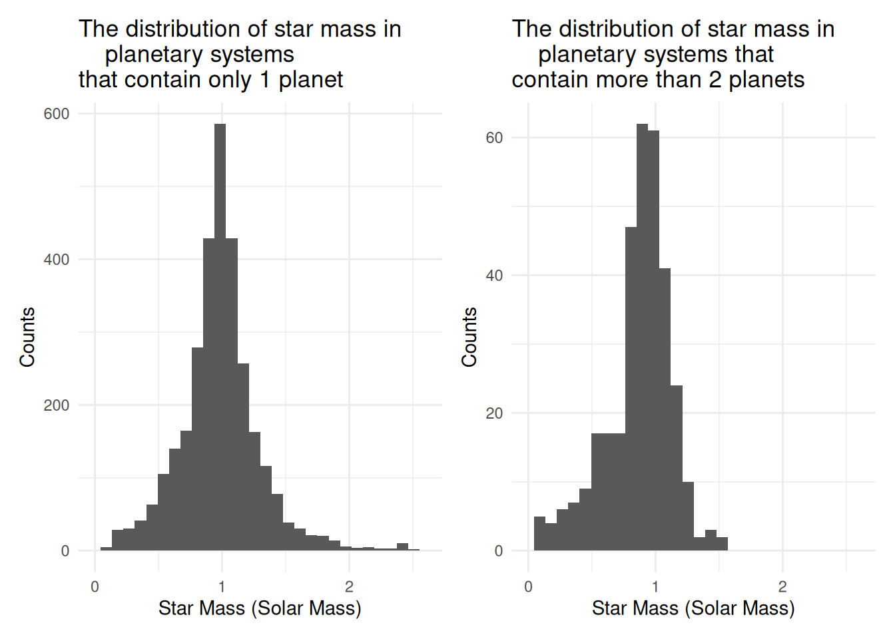

# creating a database called nasa.duckdb, setting up a connection called con_nasa
con_nasa <- dbConnect(duckdb::duckdb(), dbdir = "nasa_db")SQL Project
Database & SQL Analytics
In this project, our group perform the following tasks:
Create a database within Posit Cloud using DuckDB from three CSV files.
Write SQL queries to extract the specific “nuggets” of information needed for your analysis, join tables, aggregate data, etc.
Create informative and professional data visualizations using the ggplot2 syntax, with each graphic fed by data extracted through complex SQL queries.
Accessing data
Exoplanet Datasets from NASA
You can download the raw data used in this exoplanet analysis directly:
Download Planet Data (CSV).
Download Planet Discovery (CSV).
Download Star Data (CSV).
planet_data <- readr::read_csv("data/planet_data.csv", comment = '#')
planet_discovery <- readr::read_csv('data/planet_discovery.csv', comment = '#')
star_data <- readr::read_csv('data/star_data.csv', comment = '#')
# the original csv files have comments line at the top,
# save the "clean" datasets after commenting out # in a new csv file
readr::write_csv(planet_data, "data/planet_data_clean.csv")
readr::write_csv(planet_discovery, "data/planet_discovery_clean.csv")
readr::write_csv(star_data, "data/star_data_clean.csv")summary(planet_data) pl_name hostname pl_orbper
Length:39570 Length:39570 Min. : 0
Class :character Class :character 1st Qu.: 4
Mode :character Mode :character Median : 10
Mean : 12078
3rd Qu.: 27
Max. :402000000
NA's :3342 # lots of NA in pl_orbpersummary(planet_discovery) pl_name discoverymethod disc_year
Length:39570 Length:39570 Min. :1992
Class :character Class :character 1st Qu.:2014
Mode :character Mode :character Median :2016
Mean :2016
3rd Qu.:2016
Max. :2026
NA's :2 summary(star_data) hostname sy_pnum st_rad st_mass
Length:39570 Min. :1.000 Min. : 0.0121 Min. : 0.0031
Class :character 1st Qu.:1.000 1st Qu.: 0.7860 1st Qu.: 0.8100
Mode :character Median :1.000 Median : 0.9500 Median : 0.9580
Mean :1.921 Mean : 1.1505 Mean : 0.9422
3rd Qu.:3.000 3rd Qu.: 1.2133 3rd Qu.: 1.0700
Max. :8.000 Max. :88.4750 Max. :23.5600
NA's :3380 NA's :6216 # lots of NA in st_rad and st_massImporting the data
Once the database is set up, we can import .csv files into the database as tables. Importing .csv files as tables requires a series of steps:
a series of DROP TABLE statements that drop any old tables with the same names as the ones we are going to create.
a series of CREATE TABLE statements that specify the table structures and field types.
a series of COPY (or LOAD DATA for MySQL) statements that read the data from the .csv files into the appropriate tables.
DROP TABLE IF EXISTS planet_data;
DROP TABLE IF EXISTS planet_discovery;
DROP TABLE IF EXISTS star_data;CREATE TABLE planet_data (
pl_name VARCHAR(255),
hostname VARCHAR(255),
pl_orbper DOUBLE);COPY planet_data
FROM 'data/planet_data_clean.csv'
(FORMAT CSV, HEADER, NULL 'NA');
CREATE TABLE planet_discovery (
pl_name VARCHAR(255),
discoverymethod VARCHAR(255),
disc_year INTEGER
);COPY planet_discovery
FROM 'data/planet_discovery_clean.csv'
(FORMAT CSV, HEADER, NULL 'NA');CREATE TABLE star_data (
hostname VARCHAR(255),
sy_pnum INTEGER,
st_rad DOUBLE,
st_mass DOUBLE
);COPY star_data
FROM 'data/star_data_clean.csv'
(FORMAT CSV, HEADER, NULL 'NA');SHOW TABLES;| name |
|---|
| discoveries |
| planet_data |
| planet_discovery |
| planets |
| star_data |
| stars |
Verify the created tables
After creating the tables, we can look at the head of the tables to verify they were created as intended.
SELECT * FROM planet_data LIMIT 10;| pl_name | hostname | pl_orbper |
|---|---|---|
| 11 Com b | 11 Com | 323.210 |
| 11 Com b | 11 Com | 326.030 |
| 11 Com b | 11 Com | NA |
| 11 UMi b | 11 UMi | NA |
| 11 UMi b | 11 UMi | 516.220 |
| 11 UMi b | 11 UMi | 516.220 |
| 14 And b | 14 And | 186.760 |
| 14 And b | 14 And | 185.840 |
| 14 And b | 14 And | NA |
| 14 Her b | 14 Her | 1765.039 |
SELECT * FROM planet_discovery LIMIT 10;| pl_name | discoverymethod | disc_year |
|---|---|---|
| 11 Com b | Radial Velocity | 2007 |
| 11 Com b | Radial Velocity | 2007 |
| 11 Com b | Radial Velocity | 2007 |
| 11 UMi b | Radial Velocity | 2009 |
| 11 UMi b | Radial Velocity | 2009 |
| 11 UMi b | Radial Velocity | 2009 |
| 14 And b | Radial Velocity | 2008 |
| 14 And b | Radial Velocity | 2008 |
| 14 And b | Radial Velocity | 2008 |
| 14 Her b | Radial Velocity | 2002 |
SELECT * FROM star_data LIMIT 10;| hostname | sy_pnum | st_rad | st_mass |
|---|---|---|---|
| 11 Com | 1 | 13.76 | 2.09 |
| 11 Com | 1 | 19.00 | 2.70 |
| 11 Com | 1 | NA | 2.60 |
| 11 UMi | 1 | NA | 1.70 |
| 11 UMi | 1 | 29.79 | 2.78 |
| 11 UMi | 1 | 24.08 | 1.80 |
| 14 And | 1 | 11.55 | 1.78 |
| 14 And | 1 | 11.00 | 2.20 |
| 14 And | 1 | NA | 1.20 |
| 14 Her | 2 | NA | 0.91 |
Designing the database
This project’s goal is to examine the methods used in the discovery of exoplanets, which are planets outside of our solar system. Data for this project is taken from NASA’s exoplanet archive database. Since there are replicates of a measurement, group by planet’s name and host’s name, we take the average of the measured metrics
CREATE OR REPLACE TABLE planets AS
SELECT
pl_name,
hostname,
AVG(pl_orbper) AS pl_orbper
FROM planet_data
WHERE pl_orbper IS NOT NULL
GROUP BY pl_name, hostname
ORDER BY pl_name;CREATE OR REPLACE TABLE discoveries AS
SELECT DISTINCT
pl_name,
discoverymethod,
disc_year
FROM planet_discovery
WHERE disc_year IS NOT NULL
ORDER BY pl_name;CREATE OR REPLACE TABLE stars AS
SELECT
hostname,
MAX(sy_pnum) AS sy_pnum,
AVG(st_rad) AS st_rad,
AVG(st_mass) AS st_mass
FROM star_data
--WHERE st_rad IS NOT NULL OR st_mass IS NOT NULL:I commented out because I
--found that it doesnt matter.
--turns out the AVG function ignore NULL values according to google
GROUP BY hostname
ORDER BY hostname;SHOW TABLES;| name |
|---|
| discoveries |
| planet_data |
| planet_discovery |
| planets |
| star_data |
| stars |
Querying data using SQL
Daisy examines the patterns in star data by:
- Finding all the host stars that have exactly 1 planet and have data (not null) for both its average radius and average mass
- Showing the first 10 rows
SELECT *
FROM stars
WHERE sy_pnum =1 AND st_rad IS NOT NULL AND st_mass IS NOT NULL;- Finding all the host stars that have the maximum number of planets
SELECT *
FROM stars
WHERE sy_pnum = (SELECT MAX(sy_pnum) AS max_number_of_planet FROM stars )
;| hostname | sy_pnum | st_rad | st_mass |
|---|---|---|---|
| KOI-351 | 8 | 1.170471 | 1.100432 |
- Creating a dataset of all the host stars that have more than 2 planets and have data (not null) for both its average radius and average mass
- Ordering by ascending number of planets
SELECT *
FROM stars
WHERE sy_pnum >2 AND st_rad IS NOT NULL AND st_mass IS NOT NULL
ORDER BY sy_pnum
;- Ordering the host star’s average orbit period by ascending orbital period
SELECT hostname,pl_orbper --here pl_orbper is already an average because
-- we are using the planets table not planet_data
FROM planets
ORDER BY pl_orbper
LIMIT 10
;| hostname | pl_orbper |
|---|---|
| PSR J1719-1438 | 0.0907063 |
| ZTF J1828+2308 | 0.1120067 |
| M62H | 0.1329350 |
| Kepler-974 | 0.1768922 |
| K2-137 | 0.1797170 |
| KIC 10001893 | 0.2197000 |
| TOI-2431 | 0.2241954 |
| ZTF J1230-2655 | 0.2359777 |
| TOI-6255 | 0.2381824 |
| KOI-55 | 0.2401040 |
- Finding the stars that have the maximum and minimum planet’s orbital period
- Joining with the stars dataset to find how many planets these stars have
SELECT p.hostname, pl_orbper, sy_pnum, st_mass,
FROM planets AS p
JOIN stars AS s ON s.hostname = p.hostname
WHERE (pl_orbper = (SELECT MAX(pl_orbper) AS max_orbital_period FROM planets)
OR pl_orbper = (SELECT MIN(pl_orbper) AS max_orbital_period FROM planets))
;| hostname | pl_orbper | sy_pnum | st_mass |
|---|---|---|---|
| COCONUTS-2 A | 4.02000e+08 | 1 | 0.37 |
| PSR J1719-1438 | 9.07063e-02 | 1 | 1.40 |
- Joining the stars and planets datasets where number of planets = 1 and previous conditions for not null
- Ordering by ascending orbital period
SELECT p.hostname, sy_pnum, st_rad, st_mass,
p.pl_orbper AS planet_orbit,
FROM stars AS s
JOIN planets AS p ON s.hostname = p.hostname
WHERE (sy_pnum =1 AND st_rad IS NOT NULL AND st_mass IS NOT NULL)
ORDER BY planet_orbit
LIMIT 10;| hostname | sy_pnum | st_rad | st_mass | planet_orbit |
|---|---|---|---|---|
| ZTF J1828+2308 | 1 | 0.0131000 | 0.6100000 | 0.1120067 |
| K2-137 | 1 | 0.3660000 | 0.4630000 | 0.1797170 |
| TOI-2431 | 1 | 0.6655000 | 0.6610000 | 0.2241954 |
| ZTF J1230-2655 | 1 | 0.0123000 | 0.6460000 | 0.2359777 |
| TOI-6255 | 1 | 0.3695385 | 0.3530000 | 0.2381824 |
| TOI-6324 | 1 | 0.2976667 | 0.2695000 | 0.2792211 |
| TOI-4552 | 1 | 0.2865390 | 0.2619000 | 0.3011255 |
| TOI-2260 | 1 | 0.9200000 | 0.9900000 | 0.3524662 |
| Kepler-78 | 1 | 0.7415470 | 0.8095000 | 0.3550056 |
| K2-131 | 1 | 0.7706491 | 0.8157656 | 0.3692636 |
Evan examines the patterns in planet discoveries:
In this section, we take a look at the pattern of planet discoveries and discovery methods over time. The first query in the section counts the number of planets that have been discovered by each discovery method.
SELECT discoverymethod, COUNT(*) AS n_planets
FROM discoveries
GROUP BY discoverymethod
ORDER BY n_planets DESC;| discoverymethod | n_planets |
|---|---|
| Transit | 4522 |
| Radial Velocity | 1180 |
| Microlensing | 278 |
| Imaging | 96 |
| Transit Timing Variations | 40 |
| Eclipse Timing Variations | 17 |
| Orbital Brightness Modulation | 9 |
| Pulsar Timing | 8 |
| Astrometry | 6 |
| Pulsation Timing Variations | 2 |
As the table shows above, the transit and radial velocity method are responsible for the majority of planet discoveries. The transit method involves watching a star, and waiting for when a planet passes in front of it. If less light is detected from the star, it is evidence that a planet has passed in front of it. The radial velocity method involves watching the movement of the star. Just as gravity from the star pulls on the planets around it, planets also pull on the star. If the star seems to ocillate in a consistent manner, it is strong evidence of a planet’s orbit.
The next query examines the early timeline of the discovery of stars.
SELECT disc_year, COUNT(*) AS n_planets
FROM discoveries
GROUP BY disc_year
ORDER BY disc_year
LIMIT 10;Here, we can see that the first confirmed exoplanet discoveries were in 1992. The table shows that after that, discoveries begin to increase in amount over the next 10 years.
The third query of this section analyzes the average orbital periods of discovered planets, grouped by discovery method. The output is ordered by average orbital period, from largest to smallest.
SELECT d.discoverymethod,
AVG(p.pl_orbper) AS avg_orbper,
COUNT(*) AS n_planets
FROM planets p
JOIN discoveries d
ON p.pl_name = d.pl_name
GROUP BY d.discoverymethod
HAVING COUNT(*) >= 5
ORDER BY avg_orbper DESC;| discoverymethod | avg_orbper | n_planets |
|---|---|---|
| Imaging | 1.702837e+07 | 25 |
| Microlensing | 3.971391e+03 | 12 |
| Eclipse Timing Variations | 3.488365e+03 | 17 |
| Radial Velocity | 1.793152e+03 | 1180 |
| Pulsar Timing | 1.475802e+03 | 7 |
| Astrometry | 8.652617e+02 | 6 |
| Transit Timing Variations | 3.407882e+02 | 40 |
| Transit | 2.442367e+01 | 4522 |
| Orbital Brightness Modulation | 1.172688e+00 | 9 |
This output suggests that planets that are discovered through imaging have much larger orbital periods, on average. This is because, for direct imaging, current technology is only advanced enough to be able to photograph larger planets that are further away from their host stars. On the other side, the orbital brightness modulation method seems to be able to detect smaller planets that have extremely small orbital periods, down to around 1.17 days on average.
Lastly, this query examines the number of discovered planets around the host stars in the database, ordered by the amount of planets.
SELECT hostname, COUNT(*) AS n_planets
FROM planets
GROUP BY hostname
ORDER BY n_planets DESC
LIMIT 10;| hostname | n_planets |
|---|---|
| KOI-351 | 8 |
| TRAPPIST-1 | 7 |
| HD 191939 | 6 |
| HD 34445 | 6 |
| HIP 41378 | 6 |
| Kepler-20 | 6 |
| HD 10180 | 6 |
| Kepler-11 | 6 |
| HD 110067 | 6 |
| K2-138 | 6 |
As seen in the table above, the maximum number of discovered exoplanets around a single star is 8, corresponding with the star KOI-351.
Creating data visualizations - Daisy’s Part
p1<-ggplot(df2, aes(x = st_mass)) +
geom_histogram() +
labs(
title = "The distribution of star mass in
planetary systems\nthat contain only 1 planet",
x = "Star Mass (Solar Mass)",
y = "Counts"
) + xlim(0,2.6) +
theme_minimal()
p2 <-ggplot(df3, aes(x = st_mass)) +
geom_histogram() +
labs(
title = "The distribution of star mass in
planetary systems that\ncontain more than 2 planets",
x = "Star Mass (Solar Mass)",
y = "Counts"
) + xlim(0,2.6) +
# ylim(0,600) +
theme_minimal()
p1+p2
The two histograms peak at star mass = 1 solar mass (a centered distribution in general). However, there are a lot more stars at 1 solar mass that have exactly 1 planet orbiting around it compared to stars at 1 solar mass with more than 2 planets orbiting. We can say that there are more planetary systems with just 1 planet orbiting around the star, and that the most common star mass across all planetary systems is 1 solar mass.
Creating data visualizations - Evan’s Part
This visualization will analyze the amount of exoplanets discovered over time. Firstly, an SQL query is used, counting the amount of planets discovered in each year, and ordering by year. The result is then saved as a dataframe in R for creating the visualization.
SELECT disc_year, COUNT(*) AS n_planets
FROM discoveries
GROUP BY disc_year
ORDER BY disc_year;ggplot(df1, aes(x = disc_year, y = n_planets)) +
geom_line() +
geom_point() +
labs(
title = "Exoplanet Discoveries Over Time",
x = "Discovery Year",
y = "Number of Planets"
) +
theme_minimal()
The most interesting part of the graph is the huge jump in 2016, of almost 1500 exoplanets. This is mostly due to the Kepler telescope, launched in 2009, releasing huge results - 1284 verified planets. 2014 was similar - Kepler was responsible for 714 discovered exoplanets. The last jump in 2021 is due to AI - a neural network named ExoMiner went through the data from the Kepler mission, and managed to confirm over 300 exoplanets. The visualization here highlights that through the advance of human technology, humanity is able to understand the universe around it more than ever.
dbDisconnect(con_nasa, shutdown = TRUE)Sources
https://exoplanetarchive.ipac.caltech.edu/index.html
https://science.nasa.gov/exoplanets/whats-a-transit/
https://www.planetary.org/articles/color-shifting-stars-the-radial-velocity-method
https://science.nasa.gov/mission/roman-space-telescope/direct-imaging/
https://science.nasa.gov/universe/exoplanets/top-5-exoplanet-moments-of-2016/
https://exoplanetarchive.ipac.caltech.edu/index.html
https://patchwork.data-imaginist.com
https://www.space.com/28111-biggest-alien-planet-discoveries-2014.html
https://www.sciencealert.com/over-350-new-exoplanets-have-been-found-hiding-in-the-kepler-data#:~:text=To%20be%20clear%2C%20these%20were,and%20is%20available%20on%20arXiv.